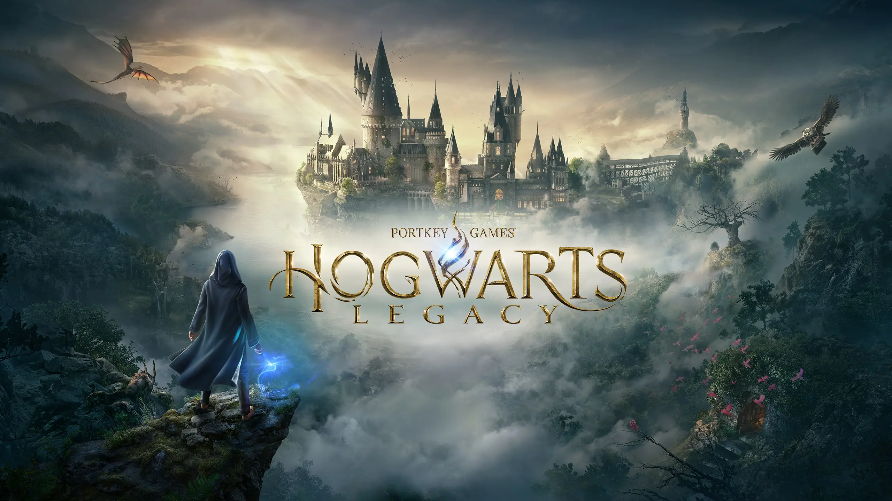

Monique Anitha

Monique Hassell
of Monique.
Mijn naam is Monique Hassell, ik ben een 23-jarige student woonachtig in Almere en op dit moment 1e-jaars student Software Developer aan de ROC van Flevoland.
Vooraf aan deze studie heb ik Helpende zorg en welzijn aan MBO college Hilversum gestudeerd, en deze studie heb ik met succes afgerond.
Sinds klein ben ik er al van overtuigd dat de moeilijkste wegen leiden naar de meest bijzondere plekken.
Daarom ben ik niet bang om deze plekken te ontdekken. Plekken waar ik mijn creativiteit kwijt kan en waar ik bezig kan zijn met oplossingen die niet alleen mooi zijn, maar ook doeltreffend.



Ik game al sinds ik 5/6 jaar ben, het begon allemaal met een gameboy. Toen kreeg ik voor mijn 9e verjaardag een roze Nintendo DS.
Die heb ik jaren gehad, met een R4 kaart die helemaal vol stond met vooral Pokemon spellen en Animal Crossing. De PS2 is een console die ik het meeste heb gespeeld in mijn jeugd samen met mijn buurjongen elke dag.
Ik had stapels met spellen die ik nu nog steeds heb. Natuurlijk kwamen daarna de PS3 en PS4 die ik ook heb gespeeld. Er zijn zoveel verschillende games die ik heb gespeeld. Het is niet iets voor mij om bij 1 spel te blijven net als Call of Duty of League of Legends.
Ik hou van spellen met een open wereld of gewoon met een hele goede verhaallijn. De afgelopen jaren game ik minder door drukte maar het blijft iets waar ik altijd op terug val en wat ik heel leuk vind.
Series en films kijken is ook een van mij dagelijkse bezigheden. Ik kan alles doen met een serie of film aan, of gewoon helemaal gefocust kijken. Ik heb zoveel series gekeken.
Mijn favoriete blijft toch wel denk ik The Walking Dead, Outlander en natuurlijk de hele Harry Potter series. Ik heb er veel meer gekeken dan dat maar dit is mijn top 3.